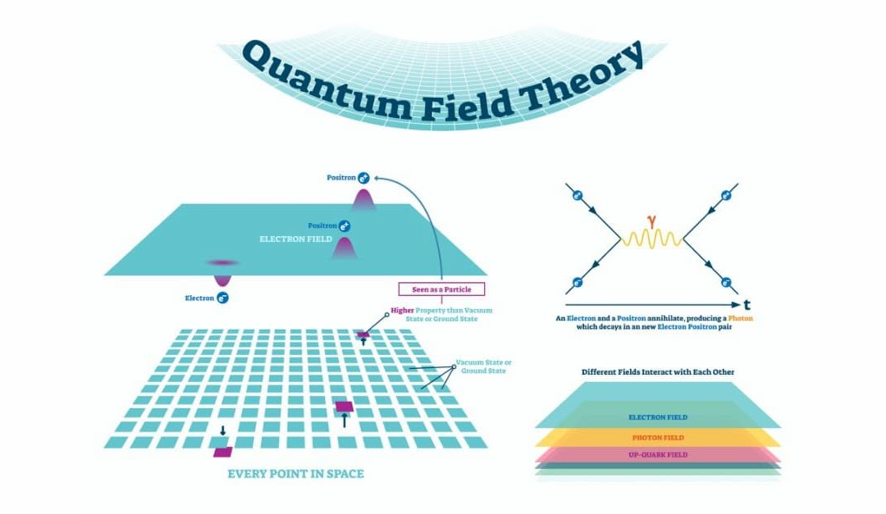
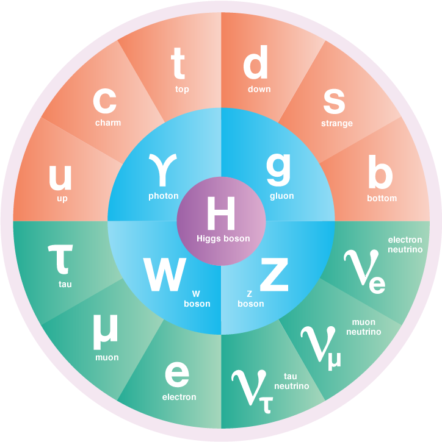

Field Theory & Standard Model
The quantum universe, governed by physical laws distinct from our daily world, immerses us in a world that is both fascinating and enigmatic. Field theory and the standard model constitute two key concepts that allow us to unlock its secrets. These fundamental pillars of quantum physics provide a unified description of the forces and elementary particles that shape the universe.
Field Theory: Beyond point particles
Field theory challenges our traditional view of point particles and offers a revolutionary perspective: the existence of dynamic fields that permeate space-time. These fields, quantified according to the principles of quantum mechanics, constitute the very essence of elementary particles.
- Field: A physical entity that propagates through space-time, having a value at each point.
- Quantification: Quantum fields can only take discrete values, defined by energy quanta.
- Interactions: Interactions between particles are described by the exchange of bosons, mediating particles which transport fundamental forces.
The Standard Model: Unifying the Forces of Nature
The Standard Model, a quantum field theory, unifies three of the four fundamental forces that govern the universe:
- Electromagnetism: The force responsible for attraction and repulsion between charged particles, such as electrons and protons.
- Weak interaction: The force responsible for radioactive decay and other processes involving neutrinos, mysterious and elusive particles.
- Strong interaction: The force that binds quarks, even smaller elementary particles, to form protons and neutrons, the constituents of the atomic nucleus.
The Standard Model relies on symmetry principles that describe interactions between particles and introduces the Higgs mechanism, a process for explaining the mass of elementary particles, a property that initially seemed incompatible with the quantum nature of fields .
The limits of the standard model: A universe full of mysteries
Despite its remarkable successes, the standard model fails to explain gravity, the fourth fundamental force that plays a crucial role at the macroscopic scale. Additionally, it doesn't take into account dark matter and dark energy, mysterious entities that make up most of the universe.
These limitations of the standard model open the way to exciting new research and discoveries. Scientists continue to explore more comprehensive theories, like string theory or supersymmetry, that could unify fundamental forces and explain the mysteries of the universe, including dark matter and dark energy.
To go further: Explore the quantum universe
If you are curious to learn more about field theory and the Standard Model, here are some suggestions:
- Read popular scientific articles or works dedicated to a non-specialist audience.
- Watch documentaries and conferences on the subject, presented by passionate scientists.
- Take online courses or interactive learning modules to deepen your knowledge.
- Participate in online forums and discussions with quantum physics enthusiasts to discuss and share your questions and discoveries.
Field theory and the Standard Model are just the beginning of an exciting journey into the quantum universe. By exploring these fundamental concepts, we open a door to a fascinating world of discoveries and questions. Who knows what secrets the universe still has in store for us